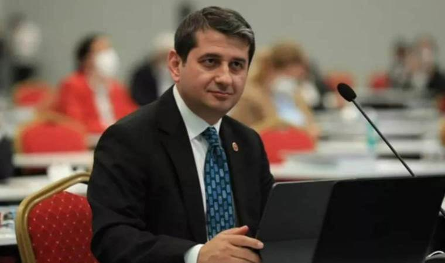

Siyaset
İYİ Partili İbrahim Özkan: Ekrem İmamoğlu ile görüştüm

İstanbul Büyükşehir Belediyesi (İBB) İYİ Parti Grup Başkanvekili İbrahim Özkan, kesin ihraç talebiyle disipline sevk edilmesiyle ilgili dün İBB’nin Saraçhane Binası’nda basın açıklaması yaptı. Özkan, tabanda dip dalga olduğunu ve seçmenin mutsuzluğunu dile getirdi. İYİ Parti’nin yerel seçimlerde her yerden aday çıkarmasının AKP’ye yarayacağını belirten Özkan, işbirliği yapılması için İBB Başkanı Ekrem İmamoğlu ile arka kapı diplomasisi yaptığını söyledi. Özkan, “Sayın Ekrem İmamoğlu’na giderek bu konuda bir şeyler yapılması gerektiğini söyledim. Arka kapı diplomasisi yaparak sayın İmamoğlu ile üç kez görüştüm. Süreç tıkandı. Her gün birileri istifa ediyor. İstanbul’da, İBB Meclis üyelerimizin haricinde yüzde 80’i istifa aşamasında. Soruyorum bu süreç kimin işine yarayacak” dedi
Finans
Borsa İstanbul'da bu hafta: Borusan Yatırım ve Pazarlama en çok kazandıran hisse
Borsa İstanbul'da BIST 100 endeksi haftayı yüzde 1,01 kazançla 7.993,85 puandan tamamladı. Endeks, hafta içinde en düşük 7.529,31, en yüksek 7.998,42 puanı gördü. Aynı dönemde Borsa İstanbul Hizmetler Endeksi yüzde 1,77 kayıpla 7.281,22 puan, Teknoloji Endeksi yüzde 1,62 artışla 10.398,87 puan, Mali Endeksi yüzde 2,99 artışla 8.441,46 puan, Sanayi Endeksi yüzde 2,03 azalışla 12.336,37 puan oldu.
Borsa İstanbul'da BIST 100 endeksine dahil hisse senetleri arasında bu hafta en çok yükselen yüzde 11,05 ile Borusan Yatırım ve Pazarlama oldu. Borusan Yatırım ve Pazarlama’yı, yüzde 8,97 ile Akbank, yüzde 8,80 ile Coca Cola İçecek izledi. Söz konusu hisseler arasında en çok değer kaybedenler yüzde 16,13 ile Sasa Polyester, yüzde 12,61 ile Pasifik Gayrimenkul Yatırım Ortaklığı, 11,86 ile Mia Teknoloji şeklinde sıralandı. Borsa İstanbul'da hisseleri işlem gören en değerli şirketler, 375 milyar 312 milyon lirayla Koç Holding, 349 milyar 485 milyon lirayla Türk Hava Yolları, 291 milyar 331 milyon lirayla Tüpraş oldu.
Spor
Liverpool, Manchester United'a diş geçiremedi

Premier Lig'in 17. haftasında Liverpool, Manchester United'ı konuk etti. Mücadele golsüz sona erdi. Liverpool lider girdiği haftayı ikinci sırada tamamladı.
Premier Lig'de 17. haftaya lider giren Liverpool, orta sıralardan üst sıralara çıkmaya çalışan Manchester United'ı konuk etti. Mücadele başladığı gibi golsüz sona erdi. Manchester United'da Dalot, 90+3'te kırmızı kart gördü.
Liverpool puanını 38, Manchester United ise 28 yaptı.
Liverpool: Alisson, Alexander-Arnold, Van Dijk, Konate, Tsimikas, Endo, Gravenberch, Szoboszlai, Diaz, Nunez, Salah.
Manchester United: Onana, Dalot, Varane, Evans, Shaw, Amrabat, Mainoo, McTominay, Garnacho, Antony, Höjlund
Magazin
Fenomen Ece Ronay gözaltına alındı
Sosyal medya fenomeni ve güzellik merkezi sahibi Ece Ronay, eski eşi Mehmet Bilir'in iş yerini kurşunlattığı iddiasıyla gözaltına alındı.
Sosyal medya fenomeni Ece Ronay, İstanbul'da gözaltına alındı. Ece Ronay'ın, eski eşinin ve kendisinin iş yerlerinin kurşunlanması olayıyla ilgili olarak azmettirici olmak gerekçesiyle gözaltına alındı. Özel harekat polis ekiplerinin katılımıyla düzenlenen şafak baskınıyla gözaltına alınan Ronay'la birlikte, Bilir'in işyerini kurşunladığı tespit edilen 5 kişi daha yakalandı. Ronay, işlemleri için emniyet müdürlüğüne götürüldü.
İstanbul Emniyet Müdürlüğü Organize Suçlarla Mücadele Şube Müdürlüğü ekipleri, sosyal medya fenomeni Ece Ronay'ın eski eşi Mehmet Bilir'in Pendik'teki işyerinin kurşunlanması ile ilgili inceleme başlattı. Yapılan çalışmalarda işyerine motosikletli kasklı kişilerin ateş ettiğini belirleyen ekipler, çalışmalarının ardından şüphelileri tespit etti. Bu sabah şüphelilere ait adreslere özel harekat polisinin de katılımıyla operasyon düzenlendi. Operasyonda olayın azmettiricisi olduğu değerlendirilen Ece Ronay'ın da evine baskın düzenlendi.
Eş zamanlı olarak yapılan baskınlarda Ronay'la birlikte yaşı küçük olduğu tespit edilen 5 şüpheli daha yakalandı. Şüphelilere ait adreslerde yapılan aramalarda otomatik silah, tabanca, 58 adet fişek ve hassas terazi ele geçirildi. Gözaltına alınan şüpheliler işlemleri için emniyete götürüldü.